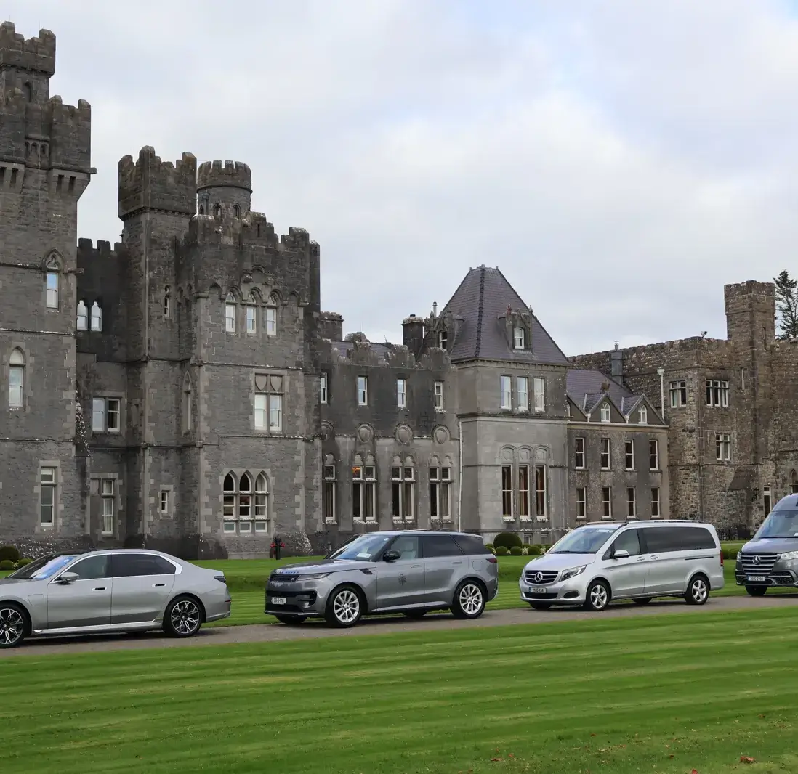

Walk the Legendary Fairways of the
Emerald Isle
Bespoke golf itineraries, guaranteed tee times on Ireland's most iconic championship courses, chartered twin-engine helicopter transfers, and exclusive private castle estates.
Guaranteed Tee Times
Old Head, RCD, Ballybunion
Chartered Aviation
Direct Apron Rotor & Jet
IGTOA Master Suite
Fully Accredited & Bonded
Audited
4.98 / 5 Rating
Our Story & Foundation
Crafted for the Discerning Connoisseur of the Royal and Ancient Game
Founded by former Irish amateur golf champions and former club secretaries of Ireland's most revered royal links, Emerald Escapes was conceived out of a solitary conviction: that true luxury in championship golf is defined not by extravagance, but by unimpeded access and pristine execution.
Our clientele consists of global leaders, captains of industry, and genuine golf purists who appreciate the subtle poetry of ancient sand dunes. They turn to Emerald Escapes because Ireland's premier tee sheets cannot be booked through conventiional channels - they are safeguarded by generations of heritage and quiet protocol.
From direct tarmac chaffeur escort onto chartered Augusta-Westland rotorcraft, to private cellar tastings in 15th-century stronghold estates, every minute of your itinerary is personally curated and discreetly overseen by our founding partners.
"I may have designed the first nine, but surely God designed the back nine."
Arnold Palmer
100%
Guaranteed Tee Times
Unconditional access to Royal County Down, Ballybunion & Old Head.
14
Manor Estates Access
Enjoy unparalleled access to Ireland's most historic and luxurious estates.
Dedicated
Aviation Concierge
Seamless and luxurious transfers to Ireland's premier golf destinations.
0 min
Airport Delays
Experience zero waiting time at the airport with our dedicated airside ramp transfer service.
Sacred Coastlines & Historic Greens
Ireland's Most Revered Golf Courses
 County Cork
W.C.R. #72
County Cork
W.C.R. #72
 County Donegal
W.C.R. #58
County Donegal
W.C.R. #58
 County Clare
W.C.R. #21
County Clare
W.C.R. #21
 County Dublin
W.C.R. #45
County Dublin
W.C.R. #45
 County Kerry
W.C.R. #52
County Kerry
W.C.R. #52
 County Mayo
W.C.R. #63
County Mayo
W.C.R. #63
 County Wicklow
W.C.R. #83
County Wicklow
W.C.R. #83
 County Limerick
W.C.R. #84
County Limerick
W.C.R. #84
 County Londonderry
W.C.R. #87
County Londonderry
W.C.R. #87
 County Donegal
W.C.R. #101
County Donegal
W.C.R. #101
The Expedition Blueprint
Exemplary Itineraries Handcrafted for Your Journey
Whether you desire low altitude helicopter hops between coastal championship links, or the unhurried majesty of private castle manors with evening whiskey tastings by the fireplace, every itinerary we construct starts with a clean sheet.
 6 Days • 5 Nights
6 Days • 5 Nights
Air Charter Route
Helicopter Circuit of Kerry
Skip regional country roads with charted helicopter transfers between Old Head, Waterville, Ballybunion and Tralee.
golf_courseOld Head • Waterville • Ballybunion • Tralee
king_bedPark Hotel Kenmare & Adare Manor
From
€14,800 / guest

8 Days • 7 NightsUltimate Estate Leisure
Chauffeur's Castle Odyssey
Unwind in the grandest castle manors. Includes falconry, private chef dining, and golf on both coastal links and parkland sanctuaries.
golf_courseLahinch • Adare Manor • K Club
king_bedAshford Castle • Dromoland Castle • Adare Manor
From
€16,900 / guest
 7 Days • 6 Nights
7 Days • 6 Nights
The Championship Trail
The Royal North
With unhindered access to Royal County Down, Royal Portrush, and Portmarnock, this trail promises an unforgettable golfing adventure.
golf_courseRoyal County Down • Royal Portrush • Portmarnock
king_bedSlieve Donard Resort • Culloden Estate
From
€14,800 / guest
 5 Days • 4 Nights
5 Days • 4 Nights
Friendly Competition
Ryder Cup Prestige
Complete your own version of the Ryder Cup by taking on your friends across four days at Irelands Ryder Cup venues The K-Club and 2027's host Adare Manor.
golf_courseThe K-Club • Adare Manor
king_bedThe K-Club • Adare Manor
From
€6,400 / guest
Setting The Standards
Uncompromising Hospitality for Distinguished Travellers
We operate strictly by private brief. Here is our unwavering operational code:
Discretion
Strict confidentiality is maintained at all times. Reinforced with strict NDA agreements, private VIP tarmac immigration clearance and unlisted accomodation ensures total anonymity for all our patrons.
Absolute Confidentiality
Expertise
Our relationships with course committees spans over 40 years, granting us access to tee times unavailable to the general public.
Exclusive Access
Private Jet & Rotor Agility
Turn a 6 hour serpentine drive through city and coastal traffic into a swift and luxurious aerial journey with our private jet and rotor services. Whisking you directly to your destination with unparalleled convenience and comfort.
Aerial Convenience
100% Custom Curation
No cookie cutter off the shelf packages. We adapt to your group's exact needs and preferences, ensuring a bespoke and unparalleled experience. From hand-selected caddies, bespoke whiskey tastings and private boat charters, we can organise your trip on and off the course.
Tailored Precision
Your Journey Awaits
Begin Your Irish Odyssey
Slots for the 2027 championship ballot season are rigorously limited. Secure your place early by contacting our Private Client desk to ensure an unforgettable experience.